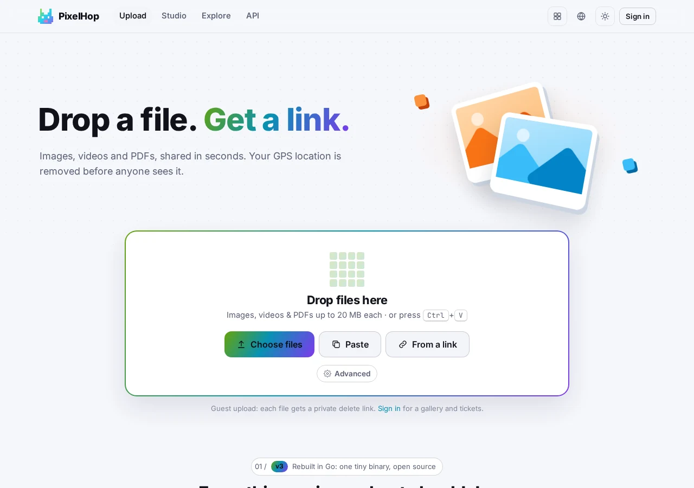

HOP · Хостинг изображений и фотостудия
Бросьте изображение, удалите метаданные, поделитесь за секунды
PixelHop даёт быструю загрузку изображений, галереи-альбомы и приватную фотостудию прямо в браузере. Короткие ссылки — на p.hel.ink, ваша панель — на pixel.hel.ink. Одна программа на Go, можно развернуть у себя, открытый код (MIT).
Все рабочие адреса на странице ведут к общедоступным сервисам семьи HOP.
Что умеет PixelHop
- Быстрая загрузка и чистые ссылки
Бросайте фото, скриншоты или рисунки и получайте читаемые короткие ссылки p.hel.ink/{slug}, прямые ссылки на изображение, Markdown и коды для вставки.
- Метаданные удаляются по умолчанию
Координаты GPS, серийные номера устройств и теги EXIF удаляются перезаписью контейнера, поэтому исходные пиксели никогда не пересжимаются.
- Приватная фотостудия в браузере
Сжимайте, меняйте размер, обрезайте, конвертируйте в WebP/AVIF, размывайте чувствительные детали и запускайте OCR прямо в браузере без предварительной загрузки.
- Единый аккаунт для всех сервисов: HOP ID
Входите с аккаунтом HOP ID во всех приложениях семейства HOP или пользуйтесь PixelHop как гость.
- Альбомы и массовая публикация
Загружайте сразу несколько изображений в адаптивную галерею, копируйте все ссылки одним щелчком или скачивайте общий ZIP-архив.
- Истекающие и приватные ссылки
Задавайте таймеры самоуничтожения (10 минут, 24 часа, 30 дней) или защищайте паролем чувствительные ссылки. Гости получают приватные ключи удаления.
- ShareX и REST API
Готовые настройки ShareX, загрузка из консоли командой pixelhop push и личные токены API для автоматических сценариев.
- Единый бинарный файл на Go для хостинга
Работает как лёгкая программа на Go около 16 МБ со встроенным SQLite и поддерживает локальный диск или любое S3-совместимое хранилище.
Свой сервер
Все рабочие адреса на странице ведут к общедоступным сервисам семьи HOP.
PixelHop

Частые вопросы
PixelHop пересжимает мои изображения или портит качество?
Нет. Удаление метаданных убирает заголовки EXIF и GPS перезаписью контейнеров файла без повторного кодирования пикселей, поэтому исходное качество сохраняется.
Нужен ли аккаунт, чтобы загружать изображения?
Нет. Загрузка как гость полностью поддерживается и даёт приватные ключи удаления. Вход через HOP ID открывает личные галереи и постоянные ключи API.
Можно ли разместить PixelHop на своём сервере?
Да. PixelHop собирается в одну автономную программу на Go без внешних зависимостей во время работы. Инструкция по настройке — в README репозитория.
Куда сообщать об ошибках и проблемах безопасности?
Создайте Issue на GitHub или отправьте письмо на security@hel.ink для ответственного раскрытия информации.
Семья HOP
PixelHop — часть HOP, лёгкого набора целевых инструментов, которые можно развернуть у себя, с единым входом.
| Сервис | Назначение | Онлайн-сервис | Исходный код |
|---|---|---|---|
| HOP ID | Единый вход, центр аккаунтов и безопасности | hel.ink · hub.hel.ink | navi-crwn/HEL.ink |
| LinkHop | Быстрое и приватное сокращение ссылок с аналитикой | link.hel.ink · hel.ink/l/{slug} | navi-crwn/LinkHop |
| BioHop | Компактные страницы ссылок с QR-кодами и темами | bio.hel.ink · hel.ink/b/{slug} | navi-crwn/BioHop |
| PixelHop | Быстрый и приватный хостинг изображений с фотостудией | pixel.hel.ink · p.hel.ink | navi-crwn/PixelHop (этот репозиторий) |
| NoteHop | Сквозное шифрование заметок с автоудалением | note.hel.ink · n.hel.ink | navi-crwn/NoteHop |
| FileHop | Конвертация файлов в браузере, ничего не загружается | file.hel.ink | navi-crwn/FileHop |
| PayHop | QR-коды для оплаты и раздел счёта, прямо на вашем устройстве | pay.hel.ink | navi-crwn/PayHop |
Нужна помощь или возникли вопросы?
Вопросы, предложения и сообщения об ошибках принимаются в трекере задач GitHub .